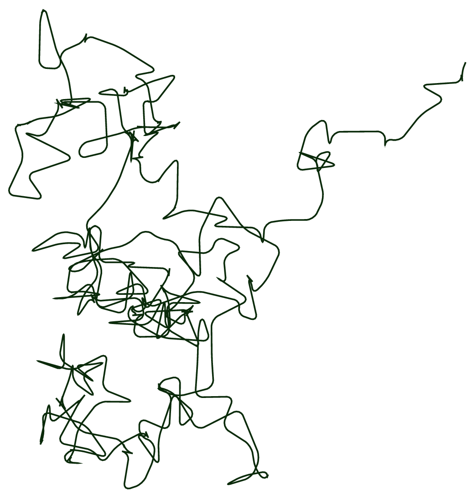

If one could attach an accurate GPSGlobal Positioning SystemGlobal Positioning System sensor to an
AMRAutonomous Mobile RoboticsAutonomous Mobile Robotics, much of the localisation
problem would disappear for open space exploration. GPSGlobal Positioning SystemGlobal
Positioning System would then inform the robot of its
would
In addition, GPSGlobal Positioning SystemGlobal Positioning System cannot function indoors or in obstructed areas and are therefore limited in their workspace. But, looking beyond the limitations of GPSGlobal Positioning SystemGlobal Positioning System, localisation implies more than knowing one’s absolute position in the Earth’s reference frame.
Consider a robot which is interacting with humans. This robot may need to identify its absolute position, but its relative position with respect to target humans is also equally important. Its localisation task can include:
- 1.
- Identifying humans using its sensor array [†]Bellotto, N. & Hu, H. People tracking and identification with a mobile robot in 2007 International Conference on Mechatronics and Automation (2007), 3565–3570,
- 2.
- Then determining its relative position to the humans.
Furthermore, during operation a robot will select a strategy for achieving its goals. If it intends to reach a particular location, then localisation may NOT be enough. The robot may need to acquire or build an environmental model, (...) i.e., a map representing 2D space if it is an indoor space which is level, or a 3D space if it is navigating rough terrain. which aids it in planning a path to the goal.
Localisation means more than simply determining an absolute pose in space. It means building a map, and then identifying the robot’s position relative to the map.
Clearly, the robot’s sensors and effectors play an
Sensors are the fundamental robot input for the process of perception, and therefore the degree to
which sensors can discriminate world state is paramount. Sensor noise produces a
Often, the source of sensor noise problems is that some environmental features are not captured by the robot’s representation and are therefore overlooked.
For example, a vision system used for indoor navigation (...)
For example, this could be indoor office
building, or a warehouse. may use the colour values detected by its colour CCDCharge Coupled
DeviceCharge Coupled Device camera. When the Sun is hidden by clouds, the illumination of the
building’s interior changes due to windows throughout the building and as a result, hue One of the
properties of a colour, defined as the degree to which a stimulus can be described as similar to or
different from stimuli that are described as red, orange, yellow, green, blue, violet within certain
theories of colour vision. values are NOT constant. The colour CCDCharge Coupled DeviceCharge
Coupled Device appears noisy from the robot’s perspective as if subject to
One of the
properties of a colour, defined as the degree to which a stimulus can be described as similar to or
different from stimuli that are described as red, orange, yellow, green, blue, violet within certain
theories of colour vision. values are NOT constant. The colour CCDCharge Coupled DeviceCharge
Coupled Device appears noisy from the robot’s perspective as if subject to
Illumination dependency is only one example of the apparent noise in a vision-based sensor
system [†]Sridharan, M. & Stone, P. Color learning and illumination invariance on mobile robots: A
survey. Robotics and Autonomous Systems 57, 629–644 (2009). Picture
Consider the noise level of ultrasonic range-measuring sensors, such as sonars, as we discussed
previously. When a sonar transducer emits sound towards a relatively smooth and angled
surface, much of the signal will coherently reflect away, failing to generate a return echo.
Depending on the material characteristics, a small amount of energy may return nonetheless.
When this level is close to the gain threshold of the sonar sensor, then the sonar will, at
times, succeed and, at other times, fail to detect the object. From the robot’s perspective,
a virtually unchanged environmental state will result in two (
The poor SNRSignal-to-Noise RatioSignal-to-Noise Ratio of a sonar sensor is further confounded by
interference between multiple sonar emitters. Often, research robots have between 12 to 48 sonars on a
single platform. In acoustically reflective environments, multipath interference (...)
The propagation
phenomenon resulting in signals reaching the receiver by two (
Such errors occur rarely, less than 1% of the time, and are virtually random from the robot’s perspective.
In conclusion, sensor noise reduces the useful information content of sensor readings. Clearly, the solution is to take multiple readings into account, employing temporal fusion or multi-sensor fusion (...) Sensor fusion is the process of using information from several different sensors to estimate the state of a dynamic system. The resulting estimate is, in some senses, better than it would be if the sensors were used individually [†]Galar, D. & Kumar, U. Chapter 1 - Sensors and Data Acquisition in eMaintenance (eds Galar, D. & Kumar, U.) 1–72 (Academic Press, 2017). to increase the overall information content of the robot’s inputs.
Aliasing is the second major shortcoming of AMRAutonomous Mobile RoboticsAutonomous Mobile
Robotics sensors which cause them to give little information content, further amplifying the problem of
The problem, known as
In robots, the non-uniqueness of sensors readings, or sensor aliasing, Sensor aliasing in multiple
types of sensors. One of the most apparent one is usually seen in digital images. For example, in the
image above, due to low sampling, moire pattern starts to be seen [†]maksim. An example of a poorly
sampled brick pattern 2006. is the norm and not the exception. Consider a narrow-beam rangefinder
such as ultrasonic or infrared rangefinders. This sensor provides range information in a
single direction without any additional data regarding material composition such as
Sensor aliasing in multiple
types of sensors. One of the most apparent one is usually seen in digital images. For example, in the
image above, due to low sampling, moire pattern starts to be seen [†]maksim. An example of a poorly
sampled brick pattern 2006. is the norm and not the exception. Consider a narrow-beam rangefinder
such as ultrasonic or infrared rangefinders. This sensor provides range information in a
single direction without any additional data regarding material composition such as
A classical problem with sonar-based robots involves distinguishing between humans and inanimate objects in an indoor setting [†]Blumrosen, G., Fishman, B. & Yovel, Y. Noncontact wideband sonar for human activity detection and classification. IEEE Sensors Journal 14, 4043–4054 (2014), Sabatini, A. M. & Colla, V. A method for sonar based recognition of walking people. Robotics and Autonomous Systems 25, 117–126 (1998).
With sonar alone, these states are aliased and differentiation is
The navigation problem due to sensor aliasing is that, even with noise-free sensors, the amount of
information is generally
The challenges of localisation does NOT lie with sensor technologies alone. Just as robot sensors are noisy, limiting the information content of the signal, so do the robot effectors.
A single action taken by a AMRAutonomous Mobile RoboticsAutonomous Mobile Robotics may have several different possible results, even though from the robot’s point of view the initial state before the action was taken is well-known.
In short, AMRAutonomous Mobile RoboticsAutonomous Mobile Robotics effectors introduce
uncertainty about future state. 
The true source of error generally lies in an
All of these unmodeled sources of error result in:
-
inaccuracy between the physical motion of the robot,
-
the intended motion of the robot, and
-
the proprioceptive sensor estimates of motion.
In odometry and dead reckoning (...)
The process of calculating the current position of a moving object by
using a previously determined position, or fix, and incorporating estimates of speed, heading (or
direction or course), and elapsed time. the position update is based on
In the following we will concentrate on odometry based on the wheel sensor readings of a differential drive robot only [†]Batavia, P. H. & Nourbakhsh, I. Path planning for the Cye personal robot in Proceedings. 2000 IEEE/RSJ International Conference on Intelligent Robots and Systems (IROS 2000)(Cat. No. 00CH37113) 1 (2000), 15–20. (...) Using additional heading sensors (e.g. gyroscope) can help to reduce the cumulative errors, but the main problems remain the same.
There are many sources of odometric error, from environmental factors to resolution:
-
Limited resolution during integration, (...) time increments, measurement resolution
-
Misalignment of wheels causing
deterministic error, -
Unequal wheel diameter, which again, causing
deterministic error, -
Unequal floor contact, which can cause
slipping during operation.
Some of the errors might be deterministic (...)
To reiterate, deterministic errors are any errors which can be
avoided and are generally caused by bad design or poorly calibrated sensors. (systematic). However,
there are still a number of non-deterministic (random) errors which remain, leading to uncertainties in
position estimation over time. From a geometric point of view one can classify the errors into three
(
- Range error
-
Integrated path length of the robot movement, as in the sum of wheel motion.
- Turn error
-
Similar to range error, but for turns which are difference of the wheel motions.
- Drift error
-
difference in the error of the wheels leads to an error in the robot’s angular orientation.
Generally the pose (...) i.e., it’s current position. of a robot is represented by the vector:
For a differential drive robot the position can be estimated starting from a known position by integrating the movement. (...) i.e., summing the incremental travel distances. For a discrete system with a fixed sampling interval the incremental travel distances are:
where is the path traveled in
the last sampling interval,
are the values representing the right and left wheel, and finally
is the
distance between two (
| (3.1) |
As we discussed previously, odometric position updates can give only a
|
| (3.2) |
where s and s are the distances travelled by each wheel, and k , k are error constants rlrl representing the non-deterministic parameters of the motor drive and the wheel-floor inter- action. As you can see in Eq. (3.2) we made the following assumption
-
The two (
2 ) errors of the individually driven wheels are independent. (...) If there is more knowledge regarding the actual robot kinematics, the correlation terms of the covariance matrix could also be used. -
The errors are proportional to the
absolute value of the travelled distances .
These assumptions, while NOT perfect in the slightest, are nevertheless suitable and will therefore be used for the further development of the error model.
The
The values for the error constants and depend on the robot and the environment and should be experimentally determined by performing and analysing representative movements.
If we assume that and
are
| (3.3) |
The covariance matrix is, of
course, always given by the
of the previous step, and therefore can be calculated after specifying an initial value (e.g.
0):
Using Eq. (??) , we can develop the two (